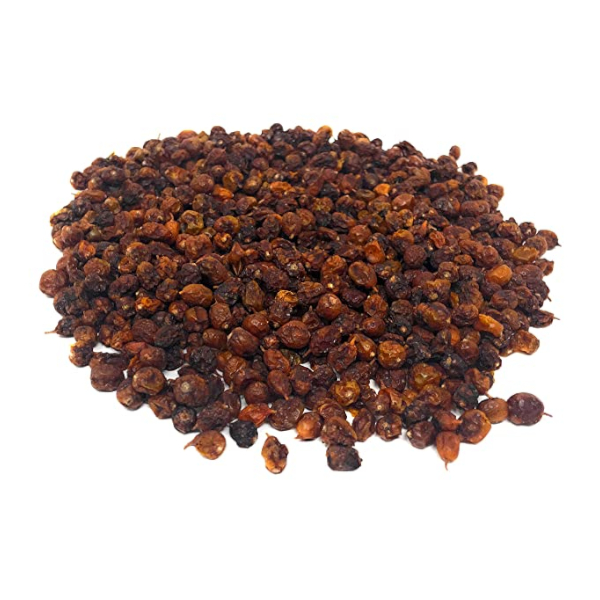
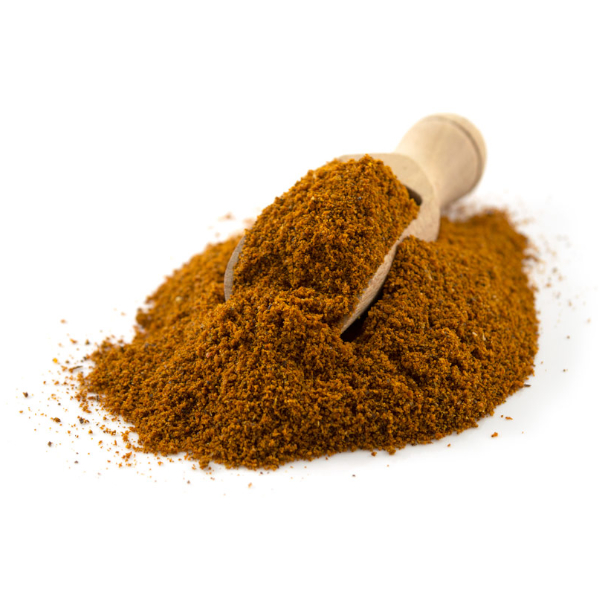
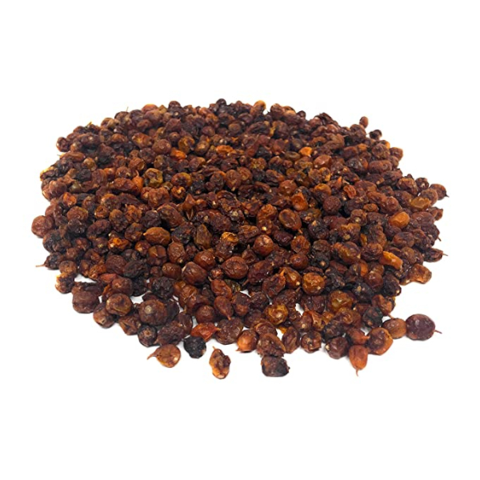
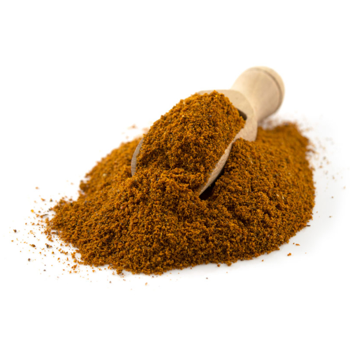

Homoktövis
Gratulálunk!
Az alábbi kupon felhasználásával 15% kedvezménnyel rendelheti meg bármelyik termékünket a webboltunkban!
A homoktövis eredetileg a Himalája lejtőin és főként Ázsiában termő növény, de ma már meghódította az egész világot. Magyarországon is találkozhatunk vele a Duna mentén, a Balaton partján vagy a Csepel-szigeten. Nálunk védett növény. Egészségügyi hatásai

 



Csodanövény
E-vitamint és esszenciális zsírsavakat tartalmaz, melyek jó hatással vannak a kiszáradt, berepedezett bőrre. Májelégtelenség esetén jól hasznosul más gyógynövényekkel együtt, így például a pitypanggal. A homoktöviskéreg növeli az epe kiválasztást. Érdemes cikóriával vagy gyermekláncfűvel kombinálni annak érdekében, hogy gyógyító hatását növeljük. Csökkenti a narancsbőr kialakulását, hiszen erősíti a kötőszövetet.
Termését elsősorban nem nyersen, hanem feldolgozva használják, dzsem, bor, ivólé, likőr, gyümölcslé, kompót formájában. Leveléből erősítő hatású tea készíthető. C-vitamin-tartalma tízszerese a citrom C-vitamin-tartalmához képest. Ennek köszönhetően jól használható megfázás és köhögés esetén.
Gyógyászati célra a homoktövis termését, levelét és magolaját használják fel. Erősíti és védi az immunrendszert, elősegíti az általános jó közérzetet.
Tudta-e?
A homoktövist különböző festési célokra is használják, ugyanis vízzel átitatva sárga színt ad, amit festők, könyvkötők, bőr- és kézművesek használnak.
Ellenjavaslat
Nagy mennyiségben való fogyasztása - ahogyan a legtöbb gyógynövény esetében, a benne található aktív hatóanyagok következtében - nem ajánlott terhes nőknek és szoptató kismamáknak, illetve 12 év alatti gyermekeknek. Érdemes kis adagokban fogyasztani, hiszen egyes esetekben hasmenést okozhat. Akut bél- és epehólyaggyulladás, illetve hasnyálmirigy megbetegedések esetén használata nem ajánlatos.
Információk
Az oldal készítője: Elekes Fanni
Az oldal forrása: megtekintésehez kattints ide!